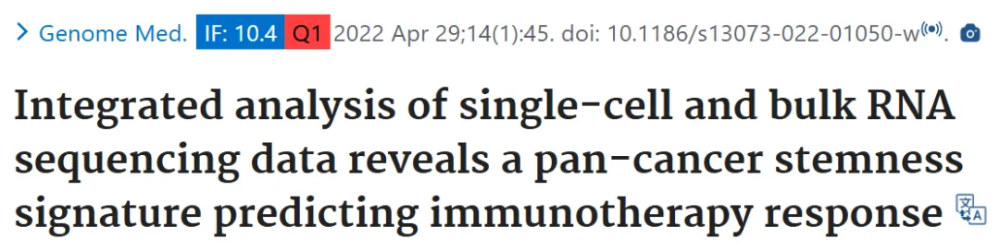
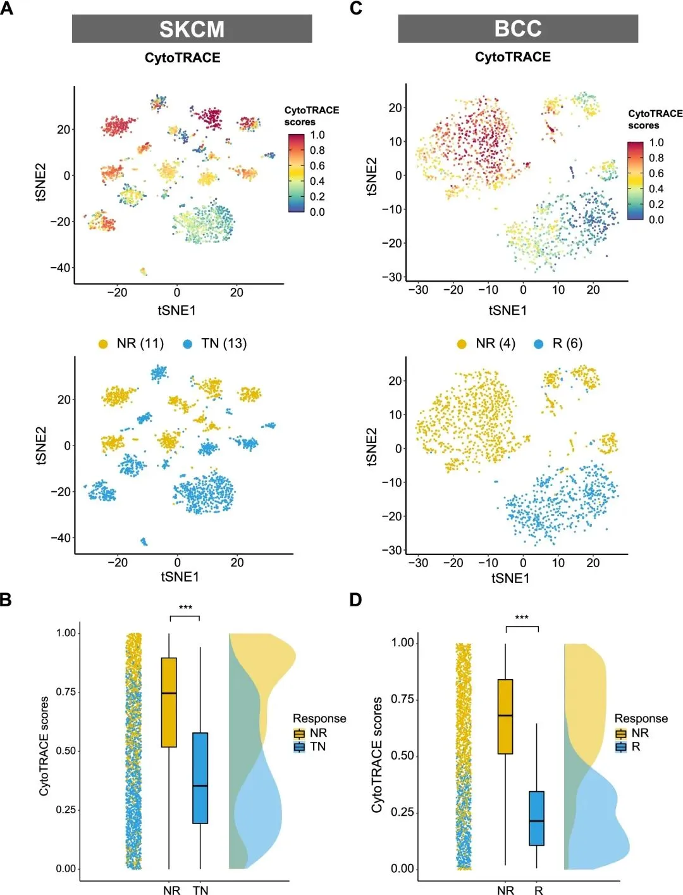
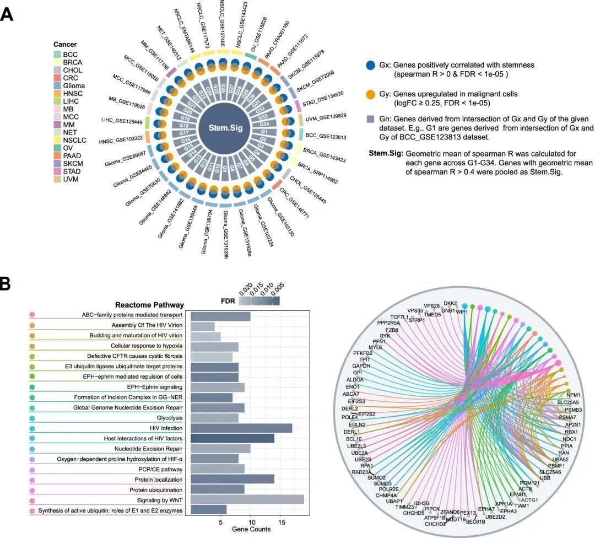
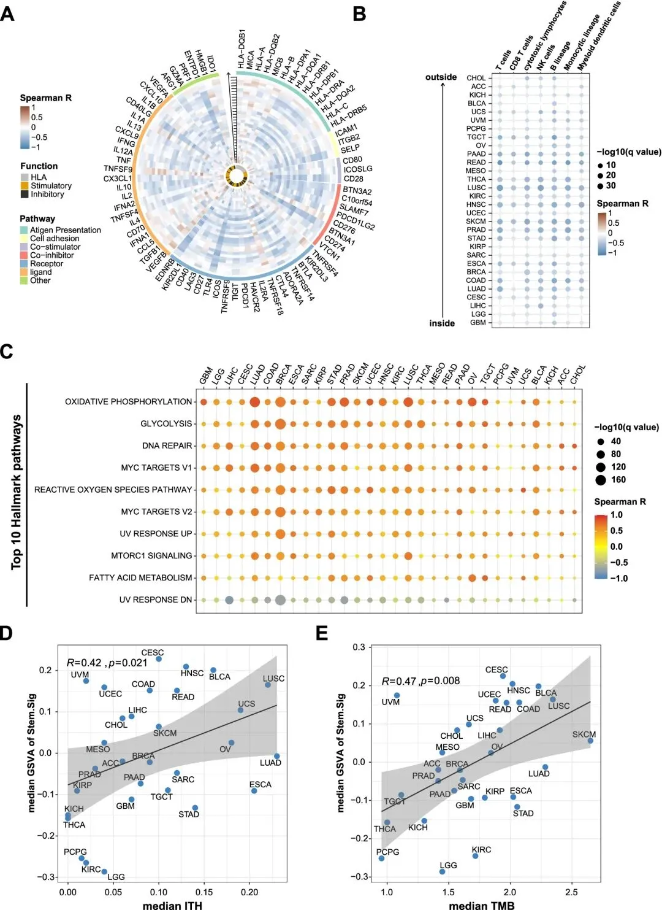
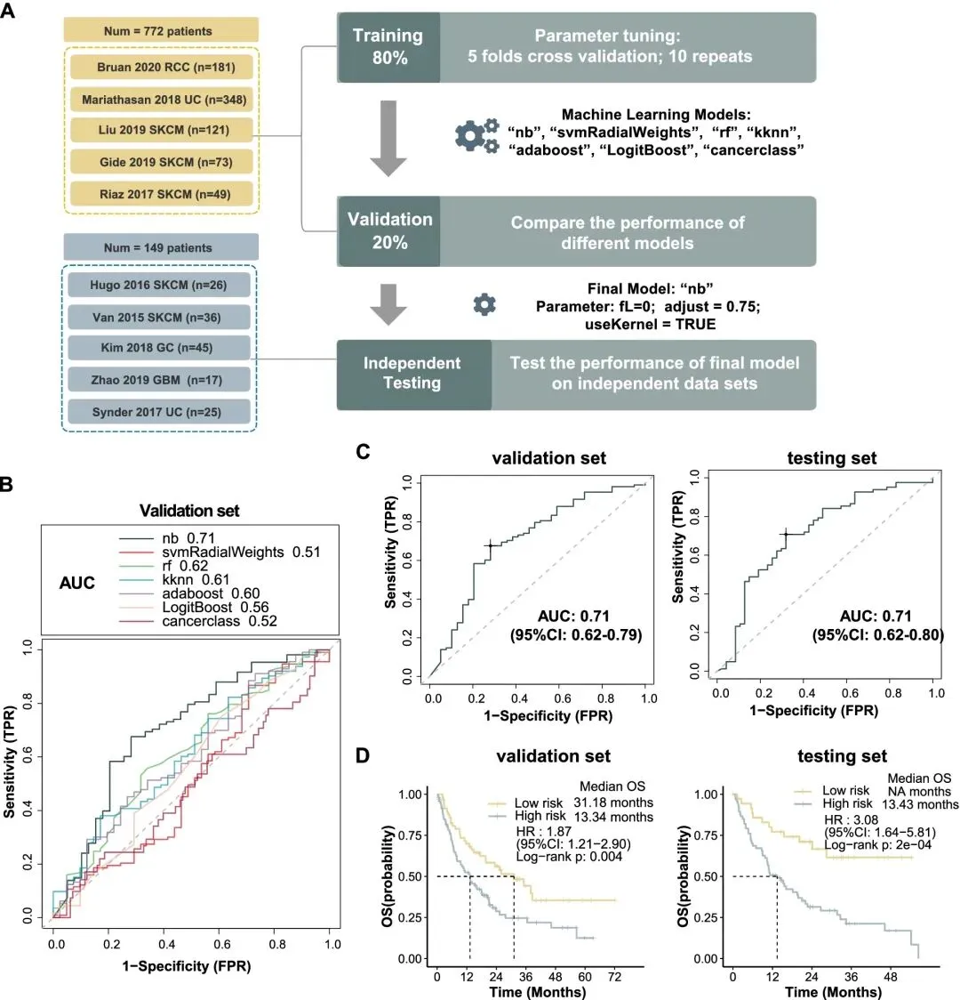
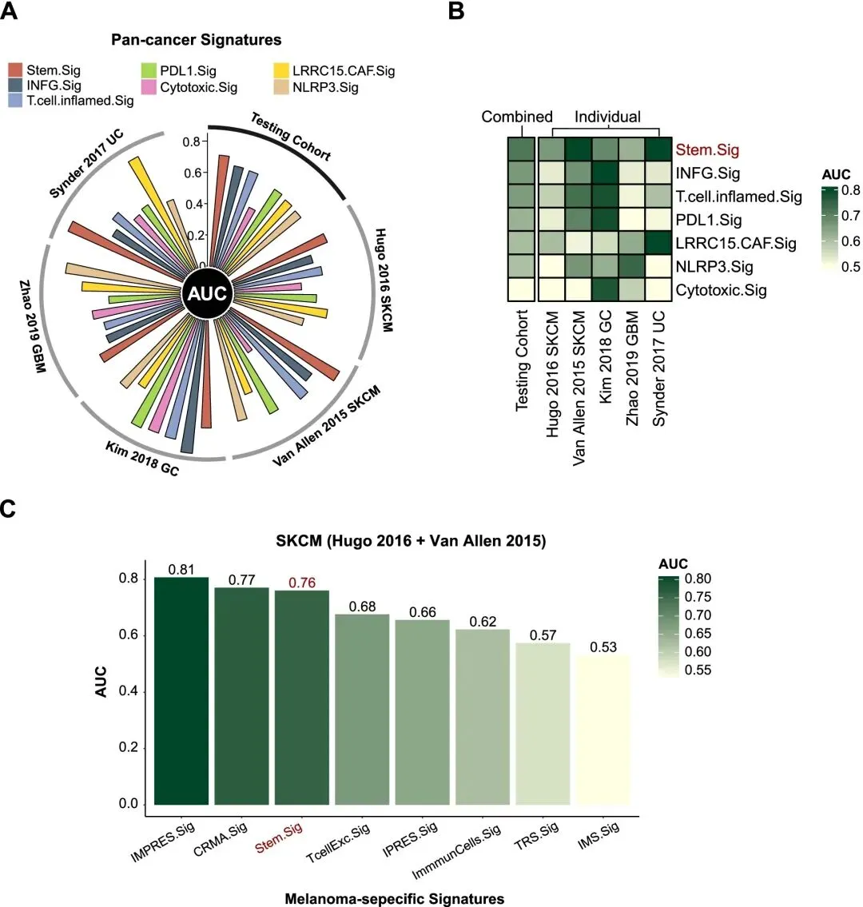
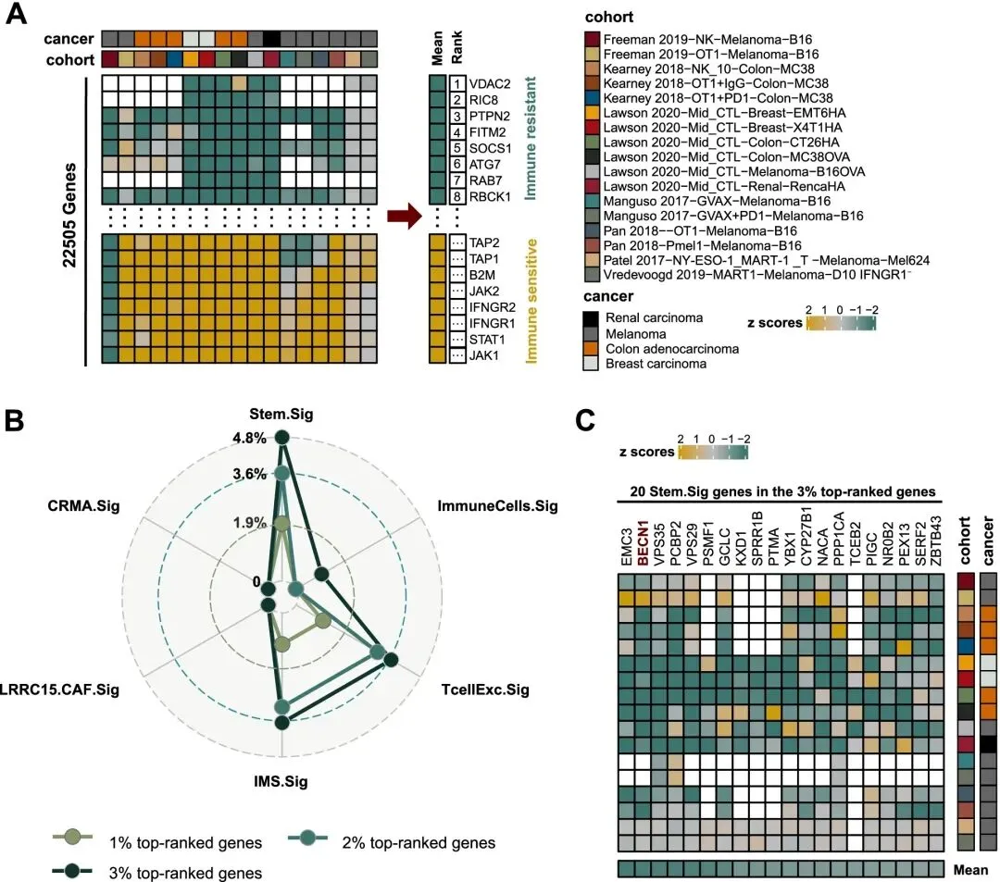

sc联合bulk RNA-Seq揭示预测免疫治疗反应的泛癌干细胞特征
原文：https://mp.weixin.qq.com/s?__biz=MzAwMzIzOTk5OQ==&mid=2247533717&idx=1&sn=655c7290a42905cee5346fc3c5025496&chksm=9b3c3dc5ac4bb4d37332c6f9bcd8f80154283f678ead02aaa9f8709d7aac344a1f7195587e4a#rd 合集：文献速递
** **
一、写在前面
文章 Integrated analysis of single-cell and bulk RNA sequencing data reveals a pan-cancer stemness signature predicting immunotherapy response**（IF= 10.4）发布于2022年《 Genome Med》期刊。**

这篇文章我们关注一下方法部分，特别是 Stem.Sig 构建的逻辑和流程。这篇文章构建了干性特征并打分的方法，那我们是不是可以去用其他算法去打分呢？比如细胞衰老、T 细胞状态、通路打分、或者其他自定义打分呢？这可为ICI生物标志物的挖掘提供更多维度的思路。免疫检查点抑制剂 (ICI) 开创了癌症治疗的新时代，为患者带来了前所未有的临床益处。然而，只有相对较少的患者对其有反应，这凸显了生物标志物研究的必要性，以优化患者选择和联合策略，以应对免疫耐药性。
传统的生物标志物研究主要集中于对完整肿瘤组织的全外显子组测序 (WES) 或 RNA 测序 (RNA-Seq) 进行分析，这些分析仅反映了大量不同细胞的平均遗传图谱。从这些研究中得出的现有 ICI 生物标志物显示出有限的预测值。单细胞 RNA 测序 (scRNA-Seq) 的发展使我们能够以单细胞分辨率剖析基因表达，并识别出具有更好性能的新型生物标志物。
癌症干细胞 (CSC) 是一种自我更新细胞，可促进肿瘤发生、发展和转移。越来越多的证据表明，干细胞特性与癌症免疫逃避和抵抗之间存在显著关联。先前的一项研究表明，在 21 种实体癌类型中，高干细胞特性与免疫细胞排斥相关，但缺乏直接的临床证据来验证干细胞特性与 ICI 结果之间的负相关性。
DOI: 10.1186/s13073-022-01050-w
数据：https://doi.org/10.6084/m9.figshare.17654633
代码：https://doi.org/10.6084/m9.figshare.17654633
如果需要数据分析指导 、生信热点全文复现 、自测/数据库数据个性化分析 辅导、常态化实验学习，欢迎联系客服微信[Biomamba_zhushou]。
二、主要内容
一、癌症干细胞与ICI耐药性相关

A 、C SKCM 或 BCC 恶性细胞的 tSNE 图。顶部 tSNE 图描绘了 CytoTRACE 评分在恶性细胞中的分布。深绿色表示分数较低 (低干性)，而深红色表示分数较高 (高干性)
B 、D SKCM队列中按反应表型 (NR vs. TN) 或 BCC 队列中按反应表型 (NR vs. R) 的 CytoTRACE 评分的雨云图
结论性结果：干性高的癌细胞在 NR 亚组中富集，癌细胞干性与 ICI 之间的存在负关联。
二、通过泛癌症scRNA分析开发Stem.Sig

A、 Circos 图描绘了 Stem.Sig 的发展
B、 Stem.Sig 中基因的通路富集分析
结论性结果：我们研究了 Stem.Sig 中过度表达的生物学功能，主要包括涉及缺氧、糖酵解、泛素化、EPH-ephrin 信号传导、WNT 信号传导和核苷酸切除修复 (NER) 的过程。
三、使用泛癌症TCGA队列分析Stem.Sig与免疫抑制之间的潜在联系

A、 Circos 图描绘了 Stem.Sig 与多种癌症类型中免疫相关基因表达水平之间的相关性。从 circos 图的内部到外部，带有黑色箭头的纵轴表示不同的癌症类型，由图 B 的 y 轴注释
B 、热图描绘了 Stem.Sig 与多种癌症类型中免疫细胞浸润之间的相关性
C、 热图描绘了 Stem.Sig 与 Top 10 Hallmark 通路之间的相关性
D、 每种癌症类型的中位 Stem.Sig 与中位 TMB 的相关性
E 、每种癌症类型的中位 Stem.Sig 与中位 ITH 的相关性
结论性结果：Stem.Sig 与抗肿瘤免疫呈负相关。无论 TMB 水平如何，低 Stem.Sig 的肿瘤表现出明显优于高 Stem.Sig 的肿瘤的抗肿瘤免疫力。
四、通过Stem.Sig预测免疫治疗结果

A 、使用机器学习过程构建的 Stem.Sig 模型的训练、验证和测试流程图
B 、多个 ROC 图比较，描绘了验证集中不同机器学习算法的性能
C 、ROC 图描绘了验证和测试队列中最终 Stem.Sig 模型的性能
D 、Kaplan-Meier 曲线比较验证和测试集中高风险和低风险患者的 OS
五、Stem.Sig与其他预测基因特征比较

A、 Circos 图描绘了测试集中泛癌症特征的表现
B、 热图比较了 Stem.Sig 与其他泛癌症特征的预测值。不同特征行按其在测试集中的 AUC 排序。从上到下，Stem.Sig 排名第一，而 Cytotoxic.Sig 排名最后
C、 条形图描绘了 SKCM 队列中 Stem.Sig 和其他黑色素瘤特异性特征的 AUC 值
六、利用CRISPR筛选数据探索Stem.Sig中的潜在治疗靶点

A 、根据基因敲除对抗肿瘤免疫的影响对 17 个 CRISPR 数据集的基因排名。负 (正) z 分数表示敲除特定基因后免疫反应更好 (更差)。基因根据其平均z分数进行排序。排名靠前的基因与免疫抗性相关。热图中的空白方块表示相应队列中基因数据的缺失值
B 、雷达图比较了 Stem.Sig 和其他预测特征中排名靠前的基因的百分比
C 、热图描绘了不同 CRISPR 数据集中排名靠前的 3% 基因中 20 个 Stem.Sig 基因的 z 分数
结论性结果：Stem.Sig 中排名前 3% 的基因有 20 个，这些与干细胞相关的基因的免疫抗性特性可能与 ICB 协同作为潜在的治疗靶点。
三、结论与方法
1.结论
我们提供了第一个确凿的临床证据，表明癌症干细胞特性与免疫疗法耐药性有关。通过对单细胞转录组数据进行全癌分析，我们开发了一种基因表达特征 Stem.Sig，它在预测多个队列的 ICI 结果方面优于其他已建立的特征。对 Stem.Sig 的进一步探索还揭示了一些潜在的治疗靶点。我们的研究为免疫疗法中的患者选择提供了一种有希望的解决方案，并揭示了通过靶向癌症干细胞特性来增强抗肿瘤免疫力来解决 ICI 耐药性的方法。
2.方法
①Stem.Sig 开发策略：
我们对泛癌症 scRNA数据集中恶性细胞的基因表达水平和 CytoTRACE 评分进行了 Spearman 相关性分析。
与 CytoTRACE 评分正相关的基因 (Spearman R > 0 和 FDR < 1e-05) 被视为 Gx。
在恶性细胞中差异上调的基因被视为 Gy。
为了获得与干性正相关的上调肿瘤特异性基因，将 Gx 和 Gy 相交以产生每个数据集的 Gn。
例如，G1 由来自第一个 scRNA-Seq 数据集中 Gx 和 Gy 交集的基因组成。计算了 G1–G34 中每个基因的 Spearman R 几何平均值。
最后，将 Spearman R 几何平均值 > 0.4 (中度至强相关性) 的基因汇总为 Stem.Sig。
②scRNA-Seq ICI 队列
③泛癌症 scRNA-Seq 数据集 - TISCH
④泛癌症转录组数据 - UCSC Xena
⑤ICI RNA-Seq 队列
⑥CRISPR/Cas9 筛选研究的数据队列
⑦scRNA-Seq 数据分析-CytoTRACE
⑧免疫相关基因集、MCP-counter
⑨ComBat 方法消除不同 ICI RNA-Seq 队列的批次效应
⑩机器学习 (ML) 算法，包括支持向量机 (SVM)、朴素贝叶斯 (NB)、随机森林 (RF)、k 最近邻 (KNN)、AdaBoost 分类树 (AdaBoost)、增强逻辑回归 (LogiBoost) 和 cancerclass
⑪ICI 反应特征
六种泛癌症特征 (INFG.Sig、T.cell.inflamed.Sig、PDL1.Sig、LRRC15.CAF.Sig、NLRP3.Sig 和 Cytotoxic.Sig)
七种黑色素瘤特异性特征 (CRMA.Sig、IMPRES.Sig、IPRES.Sig、TcellExc.Sig、ImmmunCells.Sig、IMS.Sig 和 TRS.Sig)
⑫AUC 为 0.9–1.0 被认为是优秀的，0.8–0.9 非常好，0.7–0.8 好，0.6–0.7 足够，0.5–0.6 差，小于 0.5 被认为没有用。
四、引用
Zhang Z, Wang ZX, Chen YX, et al. Integrated analysis of single-cell and bulk RNA sequencing data reveals a pan-cancer stemness signature predicting immunotherapy response. Genome Med. 2022;14(1):45. Published 2022 Apr 29.

如何联系我们

 留一个领取资料、开箱即用的单细胞分析镜像的微信号[Biomamba_zhushou]，方便各位随时交流。同时我们也构建了交流群矩阵，欢迎大家入群讨论。
大家可以阅读完这几篇之后添加给生信入门初学者的小贴士
没有检索，就没有发言权
留一个领取资料、开箱即用的单细胞分析镜像的微信号[Biomamba_zhushou]，方便各位随时交流。同时我们也构建了交流群矩阵，欢迎大家入群讨论。
大家可以阅读完这几篇之后添加给生信入门初学者的小贴士
没有检索，就没有发言权
已有生信基地联系方式的同学无需重复添加

 您点的每个赞和在看，我都认真当成了喜欢
您点的每个赞和在看，我都认真当成了喜欢